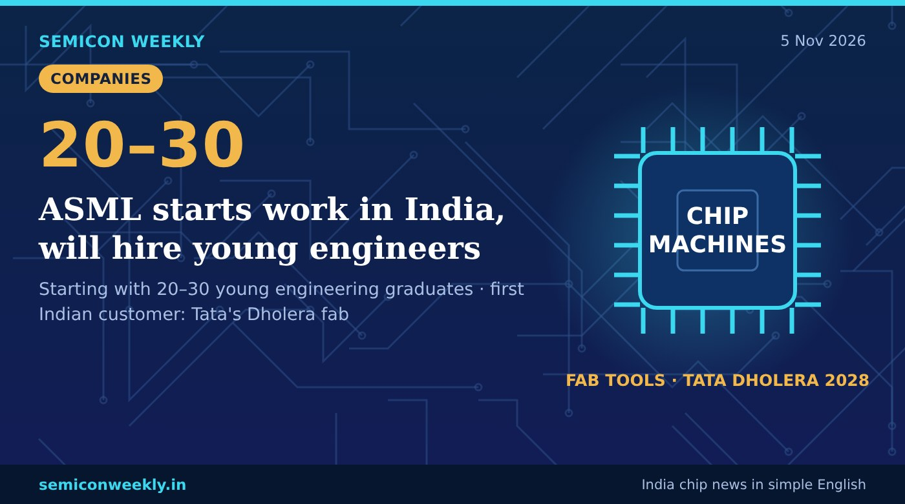

ASML starts work in India, will hire young engineers
The company whose machines print chips is now in India, and it wants young engineers to grow with Tata's first fab.

In short
- ASML, the Dutch company that makes the machines used to print chips, has started operations in India.
- It plans to begin with 20–30 young engineering graduates and grow as Tata Electronics' Dholera fab grows.
- Tata's plant, ASML's first Indian customer, is set to start in 2028.
Key numbers
20–30Young graduates to start with
2028Tata's Dholera fab set to start
1stTata: ASML's first Indian customer
What happened
- ASML has started its operations in India.
- ASML makes the lithography machines that chip factories use to print circuits on wafers.
- It will start with 20–30 young engineering graduates and add more people as Tata's Dholera fab grows.
- Tata Electronics' Dholera plant is ASML's first customer in India and is set to start in 2028.
Why it matters
Why this is useful
- A chip fab cannot run without its machines being installed, tuned and repaired on site.
- Having the machine maker in India means faster support for Indian fabs.
Why it is good for freshers
- Chip machine makers like ASML need engineers to install and fix fab tools, a new kind of chip job for Indian freshers.
- Useful skills: electronics, mechanics, optics basics, vacuum and control systems.
- Field and application engineer roles are a good start for ECE, EEE and mechanical graduates.
Why it is good for India
- Key suppliers coming to India makes it easier to build and run chip fabs here.
- Indian engineers gain skills on the most advanced chipmaking machines.
Words in this story
- Lithography: printing circuit patterns onto a silicon wafer using light.
- Fab: a factory that makes chips on silicon wafers.
- Field engineer: an engineer who installs and repairs machines at the customer's site.